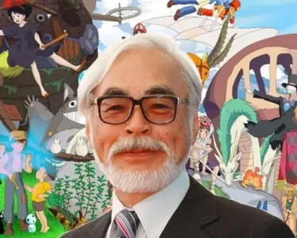
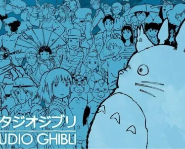
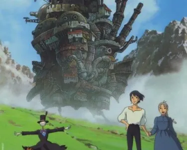

Hayao Miyazaki
Explorez le parcours extraordinaire de Hayao Miyazaki, réalisateur d'animation légendaire, dont l'influence révolutionne l'art de l'animation.Plongez dans l'univers enchanté de Miyazaki, découvrez son impact majeur sur le cinéma et l'imaginaire collectif mondial.
Publié aujourd’hui à 08h10.
Photographie au Oscar
Un légitime héritage artistique
Hayao Miyazaki, né le 5 janvier 1941 à Tokyo, au Japon, est l'un des réalisateurs d'animation les plus influents et respectés au monde. Son héritage est profondément ancré dans l'histoire de l'animation japonaise et a ouvert la voie à une nouvelle ère de l'animation. Miyazaki est originaire d'une famille d'artistes. Son père était le directeur de l'entreprise familiale, la Miyazaki Airplane, qui fabriquait des gouvernes pour avions. Cela a peut-être influencé son amour pour l'aviation, qui se reflète dans de nombreux films ultérieurs. Son intérêt précoce pour l'animation l'a conduit à fréquenter l'école secondaire de Gakushuin, où il a étudié la littérature occidentale et l'animation, avant d'entrer à l'Université Gakushuin. Cependant, sa véritable passion pour l'animation s'est développée alors qu'il travaillait comme animateur chez Toei Animation.
Image officiel du studio Ghibli
Le studio Ghibli: Une étape cruciale
Le travail acharné et le talent de Miyazaki ont rapidement attiré l'attention. Au début de sa carrière, il a travaillé sur des séries télévisées animées et a participé à la création de plusieurs films d'animation. Cependant, son véritable succès est survenu lorsque lui et son collaborateur de longue date, Isao Takahata, ont fondé le Studio Ghibli en 1985. Avec le Studio Ghibli, Miyazaki a réalisé un certain nombre de films qui ont marqué l'histoire de l'animation. Des œuvres telles que "Mon Voisin Totoro," "Le Voyage de Chihiro," "Princesse Mononoké," et "Le Château Ambulant" ont conquis le cœur du public du monde entier grâce à leur beauté visuelle, leur profondeur narrative et leurs thèmes universels. Ses films ont établi de nouveaux standards en matière d'animation, en mélangeant habilement la magie, la nature, et les préoccupations sociales.
Image tirée du film
Un légitime héritage
L'impact de Miyazaki sur l'animation ne se limite pas à son succès au box-office. Il a également ouvert la porte à une nouvelle génération d'animateurs, tant au Japon qu'à l'étranger, qui s'inspirent de son approche artistique unique et de ses récits innovants. Il a contribué à élargir le champ de l'animation en tant qu'art, laissant une empreinte indélébile dans l'industrie et l'imaginaire collectif des amateurs de films d'animation. Hayao Miyazaki est un trésor national au Japon et une icône internationale de l'animation. Sa carrière exemplaire continue d'inspirer des générations de cinéastes, et son travail restera à jamais une référence dans le monde de l'animation.
Filmographie
Voici une filmographie regroupant les longs métrages, les courts métrages...